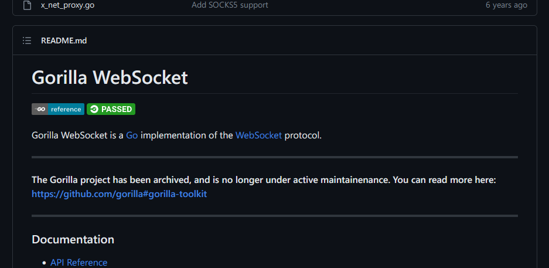
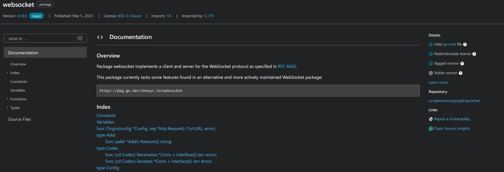

Go(일명 Golang)은 구글에서 제작한 언어로써, 많은 프로젝트에 사용되며 큰 사랑을 받는 언어 중 하나입니다.
Go 언어는 구글 내부에서 소프트웨어를 작성하기 위해 만들어진 언어에 가꺼운 만큼, 웹과 관련된 분야에서 주로 이용(보통 백엔드에 많이들 쓰시는걸로 알고 있습니다.)합니다.
웹을 지탱하는 기술들은 많고, 수많은 웹 표준들과 네트워킹 표준들 중 하나인 웹소켓이 오늘의 주인공입니다.
웹소켓이 뭔데?
웹 소켓
웹 소켓은 사용자의 브라우저와 서버 사이의 인터액티브 통신 세션을 설정할 수 있게 하는 고급 기술입니다. 개발자는 웹 소켓 API를 통해 서버로 메시지를 보내고 서버의 응답을 위해 서버를 폴링하지 않고도 이벤트 중심 응답을 받는 것이 가능합니다.
- by MDN 브라우저와 서버 간의 단발적인(HTTP와 같은) 연결이 아닌 지속적인 연결을 할 수 있게 만들어진 표준입니다.
브라우저와 서버를 지속적으로 연결해서 정보를 실시간으로 받아서 처리해야 하는 경우, 웹소켓이 유용합니다.
Go와 웹소켓
Go를 사용해서 웹소켓을 활용한 프로그래밍을 해야 할 때가 있습니다.
보통의 언어들에서 그렇듯이, 보통 웹소켓을 다루기 위해선 라이브러리가 필요합니다.
여기서 약간 고민이 되기 시작합니다. "무슨 라이브러리가 좋을까?"
Go에서 웹소켓을 다루기 위해 만들어진 라이브러리는 많습니다. 그 중에서 라이브러리를 고르는 것이 일입니다.
다만, 여기서 약간의 문제가 생깁니다.
라이브러리를 고르기 위해서 구글에 검색하면, 대부분 gorilla/websocket 라이브러리를 추천합니다.
대부분의 예제들도 모두 gorilla/websocket 라이브러리를 기준으로 작성되어 있습니다. 상당히 의존도가 높은 라이브러리입니다.
하지만, 이 라이브러리가 최근 개발을 돌연 중단한 것입니다.

이렇게 된다면, 대체 라이브러리를 찾아야 합니다.
대체 라이브러리 찾기
Go에서 웹소켓을 다루기 위한 라이브러리는 많습니다.
Go의 stdlib(Standard Library, 표준 라이브러리)의 서브 패키지(Go 소스코드와는 분리된) 중에는 네트워크 관련 구현(HTTP, TCP, ETC...)를 모아둔 golang.org/x/net 패키지가 있습니다.
이 패키지는 Go 소스 트리에는 없으나 Google이 보관하는, Go의 net 패키지에 들어가지 않는 "추가 기능"을 모아둔 패키지입니다.
이 패키지 중에는 웹소켓 구현체인 golang.org/x/net/websocket이 존재합니다. 다만, 문제가 있습니다.
문서가 부족하고, 해당 라이브러리에 대한 설명이나 레퍼런스도 부족합니다. 또한 기능 또한 몇 가지가 완벽하게 구현되어 있지 않습니다.
(다른 라이브러리보다 에러 핸들링이 빈약하고, 패키지에 대한 정보도 부족합니다.)
어찌된 일일까요? /x/net/websocket은 구글이 직접 관리하는, 메인 stdlib은 아니지만 보조적으로 지원되는 라이브러리입니다. 그럼에도 인터넷에 자료는 많지 않습니다.
이에 대한 내용은 다음과 같습니다.
대략적으로, /x/net/websocket 라이브러리는 "개발 주체가 명확하지 않고, 모두가 gorila/websocket 라이브러리를 쓰고 있으니, 이를 삭제하자는 것"입니다.
의존성이 있는 소프트웨어가 있으니 삭제하지 않은 모양이지만, 그럼에도 개발은 진척되지 않고 결국 몇년간 망가진 상태로 방치된 것으로 추정됩니다. 이미 gorila/websocket 라이브러리를 잘 쓰고 있고, 이 쪽이 좀 더 많은 기능을 제공하니 stdlib을 쓸 이유가 없다는 것이죠.
하지만 상황이 달라졌습니다. 이젠 그 라이브러리가 개발 중지를 선언했습니다. 그것도 현재 시점 4개월 전(2022년 12월)입니다.
당연히 그동안 gorila/websocket이 거의 표준과도 같았으니 모두가 썼지만, 이제는 그 라이브러리가 개발을 중지했습니다.
그럼 대체 라이브러리를 또 찾아야 합니다.
또 다른 라이브러리를 찾아
현재 /x/net/websocket은 stdlib인 해당 라이브러리 대신 타 라이브러리를 사용하도록 권장합니다.

nhooyr.io/websocket 라이브러리를 대체 라이브러리로 추천합니다.
해당 라이브러리는 현재 많은 프로젝트에서 채택하고 있는 라이브러리로써, 개발이 활발한 라이브러리입니다.
다른 라이브러리와 달리 의존성이 stdlib 외엔 하나뿐이고, Context 기능과 여러 지원들이 추가되어 있습니다.
이쪽도 /x/net/websocket처럼 많은 기능을 지원하진 않지만, 잘 작동하는 가볍고 미니멀한 라이브러리라고 생각할 수 있습니다.
저 또한 프로젝트에 이 라이브러리를 사용하기로 결정했습니다.
마치며
제가 처음 이 사실을 알게 된 것은 해당 프로젝트가 웹 소켓을 사용해야 하는 프로젝트라, 라이브러리를 선정하다 해당 문제를 마주하게 되었습니다.
이러한 문제는 Go만의 문제가 아닐 수도 있습니다만은, 해당 라이브러리에 대한 사실을 잘 모르는(저 같은) 사람들에겐 혼란을 줄 수 있는, 그런 일이라고 생각합니다..